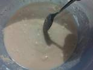
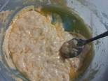
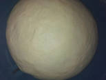
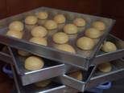

Dalam wadah, masukkan 250 ml air hangat(jgn panas ya, nanti ragi mati),
masukkan 5 sdm terigu, gula, ragi. Aduk dengan sendok, searah jarum jam smpai tercampur rata.

Masukkan setengah terigu, uleni setengah kalis, masukkan satu per satu kuning telur,
susu dan margarin. Uleni, masukkan sisa terigu.

Uleni kalis elastis, halus, licin dan tidak lengket, sekitar 6 - 8 menit.
Taruh dalam wadah yg sdh dolesi sedikit minyak (kl saya di wadah yg sama
dg tempat menguleni),tutup dengan plastik wrap, atau kain lembab. Lalu Diamkan smpai
mengembang 2x lipat, atau sekitar 45 mnt.

Kempiskan adonan, uleni sebentar, bagi, dan bentuk bulat adonan.
Diamkan lagi, sekitar 10mnt.

Panaskan minyak untuk menggoreng, buat lobang dengan jari telunjuk,
masukkan ke dalam minyak, goreng dg api kecil, dengan sekali balik. Angkat.